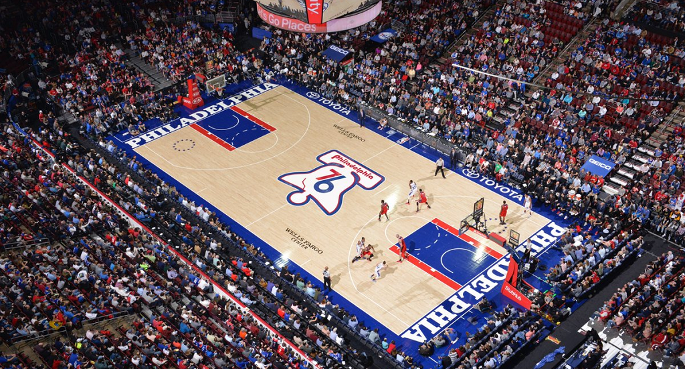

Philadelphia 76ers - Fundada em 1946, a franquia tem uma rica história na NBA, com 3 títulos da liga (1955, 1967, 1983). Grandes lendas como Wilt Chamberlain, Julius Erving, e Allen Iverson passaram pelo time. Recentemente, com Joel Embiid e James Harden, os 76ers estão buscando mais um título.
Elenco - Joel Embiid (#21), Tyrese Maxey (#0), Tobias Harris (#12), PJ Tucker (#17), Kelly Oubre Jr. (#7), De'Anthony Melton (#8), Montrezl Harrell (#5), Jaden Ivey (#0).
Títulos NBA - 3 (1955, 1967, 1983)
Títulos Conferência - 3 (1977, 1980, 2001)
Estádio - Wells Fargo Center (20.478)
